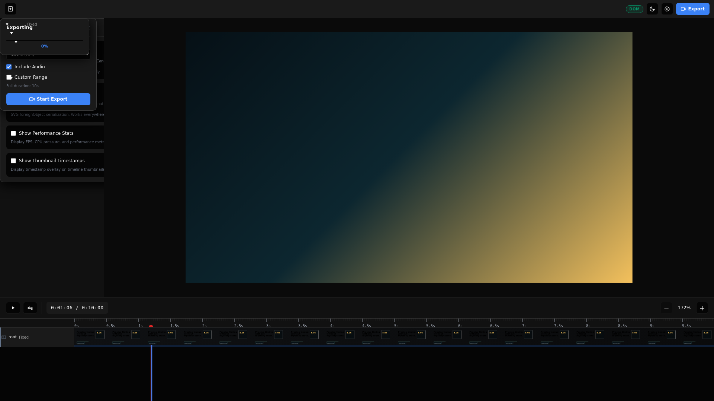
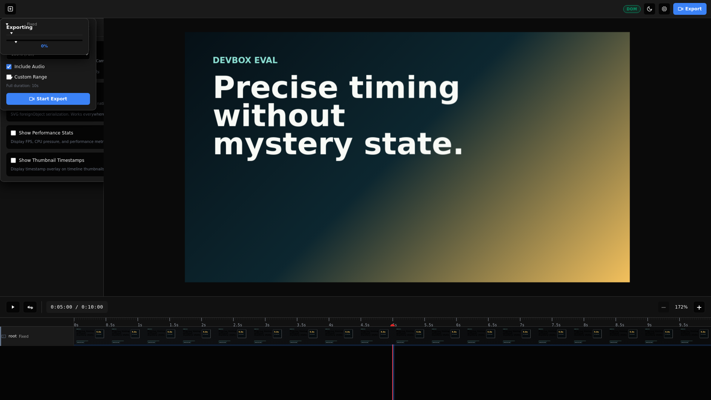
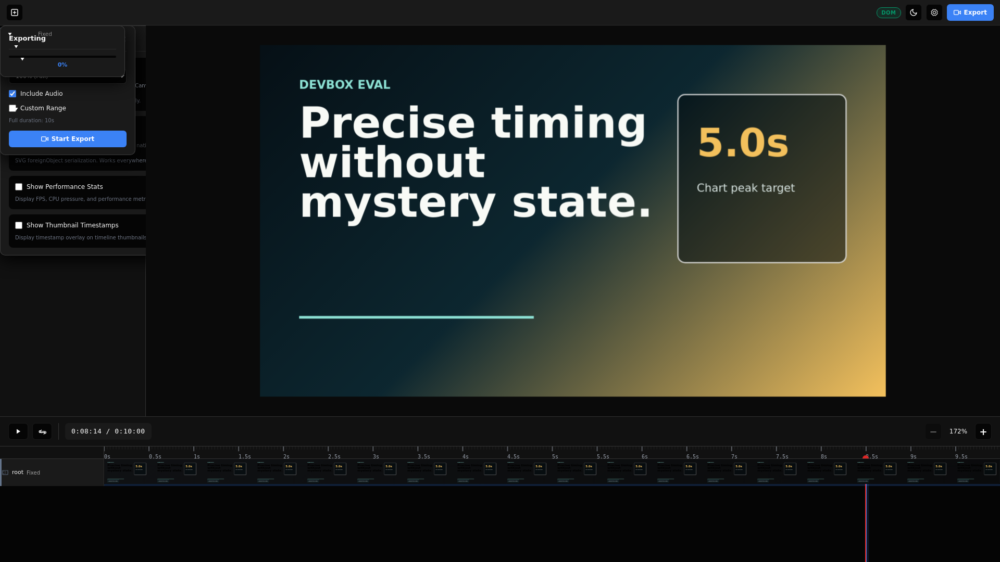

HyperFrames vs Editframe Devbox Eval
Execution date: 2026-04-30 on ip-10-0-9-220. This report evaluates one
precise-timing fixture plus public/docs/API evidence. It is not a blind taste benchmark.
Automated Render Results
Published hyperframes@latest linted, validated, snapshotted, and rendered a
10s 1920x1080/30fps H.264 MP4.
- Command elapsed: 5971ms
- Duration: 10.000000s
- Size: 700 KB
- Codec: h264
Published @editframe/cli@0.49.7 default AVC render failed. Browser-driven
EF_RENDER.renderStreaming({ codec: "vp9" }) produced a 10s 1920x1080/30fps
MP4 containing VP9 video.
- Browser VP9 elapsed: 1280ms
- Duration: 10.000000s
- Size: 421 KB
- Codec: vp9
Rubric Findings
| Category | Weight | Finding | Evidence |
|---|---|---|---|
| Visual output quality | 18% | not final | Not blindly judged. Both controlled fixtures produced screenshots; this run should not decide taste/video quality. |
| Timing and motion control | 14% | HF edge | Both can seek exact timestamps. HyperFrames validated and snapshotted the GSAP timeline through first-party CLI; Editframe snapshotted via ef-timegroup.seek and rendered through browser API. |
| Timeline and editability | 12% | split | Editframe has richer public editor primitives; HyperFrames source remains plain HTML/data attributes and passed lint/validate. |
| Agent success rate | 12% | HF edge | HyperFrames fresh init plus lint/validate/snapshot/render passed. Editframe fresh init passed, but advertised --skip-skills flag failed and default CLI render failed on AVC. |
| Media handling | 10% | not tested | This devbox run did not exercise external media, audio, captions, or alpha. |
| Render fidelity | 10% | HF edge | HyperFrames produced default H.264 MP4 at 1920x1080/30fps/10s. Editframe CLI default failed; browser VP9 fallback produced valid 1920x1080/30fps/10s MP4. |
| Performance and cost | 8% | EF conditional edge | Editframe VP9 browser render elapsed 1280ms; HyperFrames draft H.264 render command elapsed 5971ms. Codecs/render paths differ, so this is directional only. |
| Observability and debugging | 7% | HF edge | HyperFrames surfaced lint/contrast checks and progress. Editframe error was clear, but the CLI left a 28-byte output file and exposes no codec flag. |
| Deployment and API ergonomics | 5% | EF source-doc edge | Editframe public docs include cloud/API render jobs, file processing, webhooks, and CPU/GPU backend selection. This run did not authenticate to test it live. |
| Human iteration workflow | 4% | not final | Not exercised with human editors. Public docs suggest both have timeline/editor workflows; Editframe has broader standalone editor widgets. |
Codec Probe
Editframe's browser renderer depends on WebCodecs encoder support. On this devbox Chrome supports VP9/VP8/AV1 but not the AVC config selected by the CLI.
| Name | Codec string | Support |
|---|---|---|
| avc | avc1.640028 | not supported |
| vp9 | vp09.00.10.08 | supported |
| vp8 | vp8 | supported |
| av1 | av01.0.05M.08 | supported |
Videos
HyperFrames H.264 MP4
Editframe Browser VP9 MP4
Timestamp Snapshots
HyperFrames snapshots
Editframe snapshots



Important Failure Evidence
Editframe default CLI render failure
- Initializing...
✔ Ready
- Rendering video...
✖ Render failed
node:internal/process/promises:394
triggerUncaughtException(err, true /* fromPromise */);
^
page.evaluate: Error: This specific encoder configuration (avc1.640028, 8000000 bps, 1920x1080, hardware acceleration: no-preference) is not supported by this browser. Consider using another codec or changing your video parameters.
at http://localhost:5176/node_modules/.vite/deps/chunk-M5YSC7MS.js?v=622dd3ba:23270:17
at async VideoEncoderWrapper.processAndEncode (http://localhost:5176/node_modules/.vite/deps/chunk-M5YSC7MS.js?v=622dd3ba:23120:13)
at async VideoEncoderWrapper.add (http://localhost:5176/node_modules/.vite/deps/chunk-M5YSC7MS.js?v=622dd3ba:23073:7)
at async renderTimegroupToVideo (http://localhost:5176/node_modules/.vite/deps/chunk-67JHYUZS.js?v=622dd3ba:330:9)
at async Object.renderStreaming (http://localhost:5176/node_modules/.vite/deps/@editframe_elements.js?v=622dd3ba:34967:7)
at async eval (eval at evaluate (:302:30), <anonymous>:2:7)
at async <anonymous>:328:30
at /tmp/hf-editframe-eval-run/editframe-smoke/node_modules/@editframe/cli/dist/commands/render.js:132:17
at async withProfiling (/tmp/hf-editframe-eval-run/editframe-smoke/node_modules/@editframe/cli/dist/utils/profileRender.js:5:31)
Editframe creator flag mismatch
The help text advertises --skip-skills, but the parser rejects it in this
published version.
> npx
> create-editframe html -d should-fail -y --skip-skills
node:internal/util/parse_args/parse_args:102
throw new ERR_PARSE_ARGS_UNKNOWN_OPTION(
^
TypeError [ERR_PARSE_ARGS_UNKNOWN_OPTION]: Unknown option '--skip-skills'. To specify a positional argument starting with a '-', place it at the end of the command after '--', as in '-- "--skip-skills"
at checkOptionUsage (node:internal/util/parse_args/parse_args:102:13)
at node:internal/util/parse_args/parse_args:376:9
at Array.forEach (<anonymous>)
at parseArgs (node:internal/util/parse_args/parse_args:373:3)
at main (file:///tmp/hf-eval-npm-cache/_npx/a680ecfe04f5894d/node_modules/@editframe/create/dist/index.js:104:34) {
code: 'ERR_PARSE_ARGS_UNKNOWN_OPTION'
}
Node.js v22.22.2
npm error code 1
npm error path /tmp/hf-editframe-eval-run
npm error command failed
npm error command sh -c create-editframe html -d should-fail -y --skip-skills
npm error A complete log of this run can be found in: /tmp/hf-eval-npm-cache/_logs/2026-04-30T19_01_19_210Z-debug-0.log
Conclusions
- For devbox-local MP4 rendering, HyperFrames is currently the safer default. It completed the exact CLI path users would run and produced a standard H.264 MP4.
- Editframe has a strong composition/editor architecture, but local rendering is codec-sensitive. Its browser API rendered fast with VP9, but the published CLI does not expose a codec override and failed on AVC here.
- Editframe's public API/cloud story is stronger on paper. This run did not authenticate to cloud render, so that remains source-evidence only, not live proof.
- Do not use this report to claim better final video taste. The fixture was intentionally controlled and no blind judges scored visual quality.
- The eval suite should keep both tracks: default user path, and expert/fallback path. A tool that can render only after hidden codec intervention should not get the same reliability score as one whose default command works.